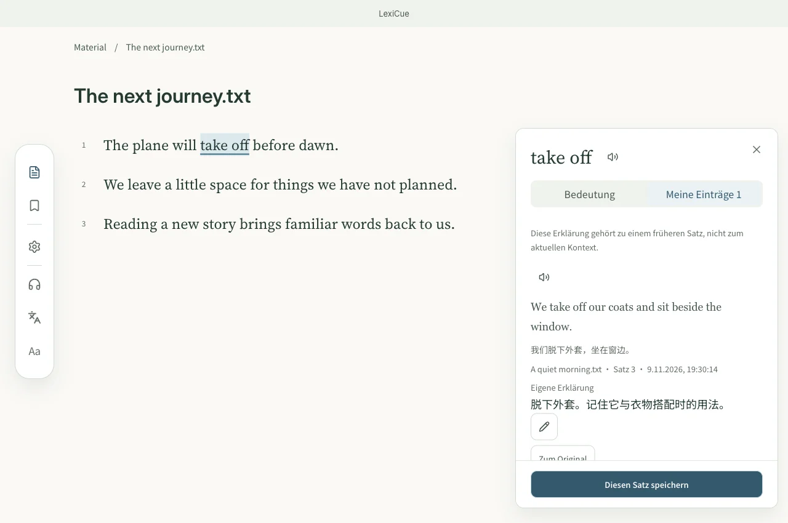
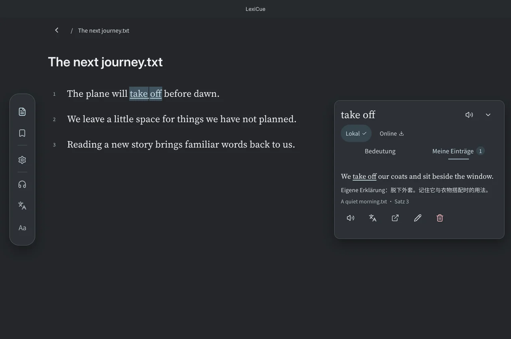

Beim Wiedersehen erinnern
Eine neue Begegnung bringt frühere Originalsätze zurück.
Auf dieser Seite
Einen gespeicherten Ausdruck wiedererkennen
Gespeicherte Ausdrücke werden bei passenden späteren Fundstellen hervorgehoben. Öffne frühere Sätze, Übersetzungen, Bedeutungen und Notizen. Es sind frühere Kontexte, keine Erklärung des neuen Satzes.



Selbst entscheiden, wie es weitergeht
Vergleiche die frühere und heutige Verwendung, ändere deine Notiz oder öffne die alte Quelle. Der aktuelle Lesefluss hat keine fälligen Karten oder Bewertungen. Frühere Wiederholungsaufzeichnungen bleiben im Verlauf.